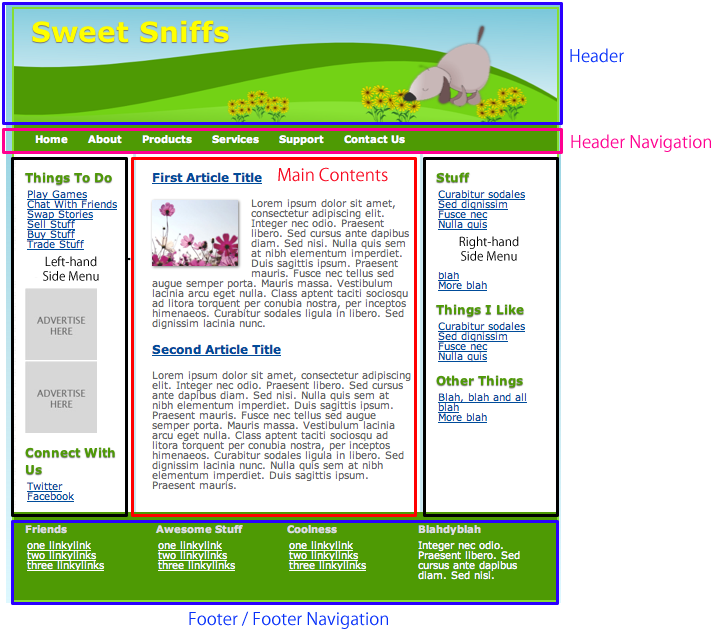
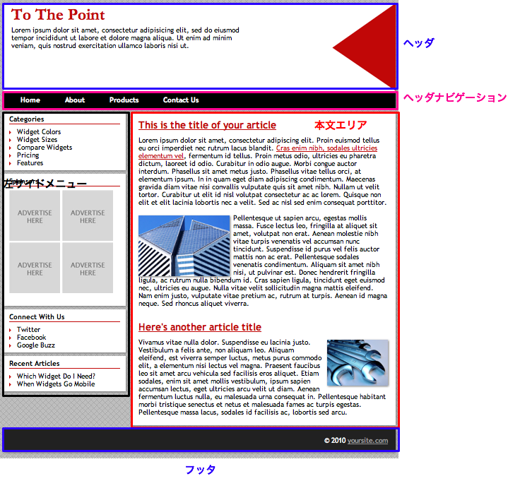
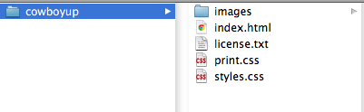
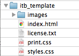
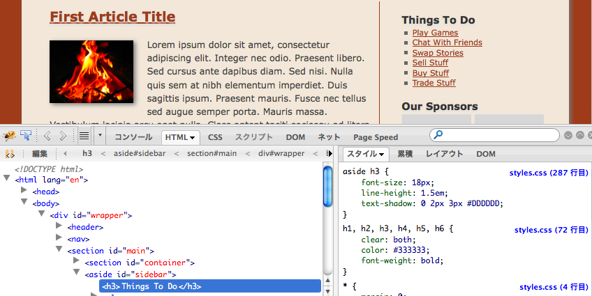
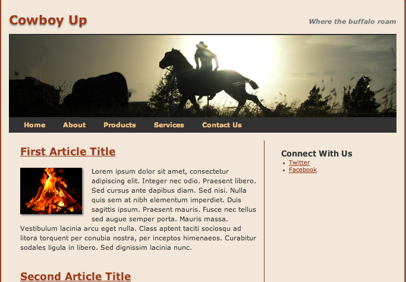
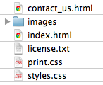

Using HTML Templates
As a beginner, it may be challenging to create HTML and CSS files from scratch. In this section, we would discuss how to create new web pages using HTML templates, which are open for use to the general public.
What Are HTML Templates
A HTML template is a package of files which includes HTML files for the first initial pages, CSS files, and other materials, such as background images and link buttons. When creating web pages from scratch, it requires a lot time and effort for designing the structure of a page. However, by using templates, it enables users to create new web pages with less effort, by allowing users to modify the existing structure, instead of making one by scratch.
The following list indicates the pros of using HTML templates.
- Users would be able to create high quality web pages, without complete knowledges and skills of HTML and CSS coding.
- Most of the HTML templates are multi-browser compatible, so users won't have to worry very much about cross-browser coding.
- Users won't have to worry about the initial design.
On the other hand, HTML templates have the following cons.
- Each HTML template would have their own rules upon coding. Therefore, users must keep those rules in mind, upon modifying the structure.
- HTML templates may come with CSS style sheets and JavaScript files that add special appearances to the pages. Therefore, the structure of the entire page may be corrupted if CSS definitions and JavaScripts are edited, especially when the values of margin, padding, and border definitions are changed.
Although HTML templates have these natures, it is still good for beginners to start off with templates for creating high quality pages. As you get used to it, you can always add and remove certain portions of the template.
Acquiring HTML Templates
For acquiring HTML templates, search the web with keywords such as "free html templates". You would find that there are many web sites that provide templates for free. However, the usage of some templates may be limited or restricted in certain ways, so be sure to check for the license information upon using templates. Also, you should also check if the template is compatible with HTML5.
The following web site provides free templates compatible with HTML5.
Creating Web Sites From Templates
In this section, we would discuss the process of making a web site, using free templates.
The Basic Procedure
- Look for a template that best matches your preference.
- Download the template, and check if it can be viewed properly with a browser.
- Delete unnecessary blocks, while making sure corruptions don't occur.
- Add necessary blocks, while making sure corruptions don't occur.
- Modify the contents of the web page.
Selecting Templates
First of all, you would need to look for a template that best matches your design preference. When choosing templates, look for one that has all the necessary block you need. Most of the templates have a common structure, but some may have blocks that others don't. The following list indicates the most basic blocks a template may have.
- Header
- Header navigation menu
- Left-hand side menu
- Right-hand side menu
- Main contents area
- Footer navigation menu
- Footer
A template called SweetSniffs has the following structure.
This class web site was made using a template called ToThePoint, and it had the following structure.
When comparing the two templates above, you may notice the following differences.
- SweetSniffs has two side bars on each side. On the other hand, ToThePoint has only one side bar to the left, and has a wider area for the main contents.
- SweetSniffs comes with a navigation menu on the footer. Commonly, web sites with a lot of pages have footers with navigation menus.
As a whole, SweetSniff has more side menus and navigation menus. Templates of this nature are suitalble for large web sites with a lot of pages. On the other hand, ToThePoint has a relatively simple design, with a large area for main contents. Templates of this nature are suitable for smaller web sites, with only a few pages.
There are various types of templates available for download, so be sure to think about which type is suitalble for your own web site, based on what the web site is for, and how it should look.
Downloading The Template
When you have selected the template for your web site, download it and check if it can be viewed properly with a web browser. In the following example, we would download and test out a template called CowboyUp.．
Visit the CowboyUp download page, and download the ZIP file with the template. After downloading the ZIP file, unpack it and check if it has the following files.
Next, copy all contents to a public directory under a web server. In this example, we would make a new directory called "itb_template" under the "public_html" folder in your CNS home directory, and copy everything to it.

Access the template using a browser. In this case, the URL would be:
http://web.sfc.keio.ac.jp/~[CNS Account Name]/itb_template/
If you encounter any errors, check the permissions of the files you have placed.
Deleting Unnecessary Blocks
After you have acquired the template, and check if it works well, delete the unnecessary blocks on the template. For this example, we would delete the blocks marked "Things To Do" and "Our Sponsers".
In order to check which portions of code to delete, use the Firebug tool. First, click on the icon with a arrow and a box, which is located on the top left hand corner. Then, click on the block which you want to delete. In this case, when you click on the "Things To Do" block, you would find that the codes related to the block is written within the "<aside id="sidebar">" element.

After locating the relavant code, delete it, using a text editor. In this example, we would delete the highlighted portions of code, indicated below.
<aside id="sidebar"><!-- sidebar --> <h3>Things To Do</h3> <ul> <li><a href="#">Play Games</a></li> <li><a href="#">Chat With Friends</a></li> <li><a href="#">Swap Stories</a></li> <li><a href="#">Sell Stuff</a></li> <li><a href="#">Buy Stuff</a></li> <li><a href="#">Trade Stuff</a></li> </ul> <h3>Our Sponsors</h3> <img src="images/ad125.jpg" alt="" /> <img src="images/ad125.jpg" alt="" /><br /> <img src="images/ad125.jpg" alt="" /> <img src="images/ad125.jpg" alt="" /><br /><br /> <h3>Connect With Us</h3> <ul> <li><a href="#">Twitter</a></li> <li><a href="#">Facebook</a></li> </ul> </aside><!-- end of sidebar -->
After deleting the relavant portions of code, check and see to make sure there are no corruptions.

Next, delete unnecessary portions of the navigation menu, using the same method. In this example, we would take out everything except the link to "Home", in the navigation menu. To be specific, the portions that we would delete is highlighted below.
<nav><!-- top nav --> <div class="menu"> <ul> <li><a href="#">Home</a></li> <li><a href="#">About</a> <ul> <li><a href="#">The Ranch</a></li> <li><a href="#">History</a></li> <li><a href="">Vision</a></li> </ul> </li> <li><a href="#">Products</a> <ul> <li><a href="#">Spurs</a></li> <li><a href="#">Chaps</a></li> </ul> </li> <li><a href="#">Services</a> <ul> <li><a href="#">Rodeos</a></li> <li><a href="#">Wrangling</a></li> </ul> </li> <li><a href="#">Contact Us</a></li> </ul> </div> </nav><!-- end of top nav -->
Adding Necessary Blocks
After deleting unnecessary portions of the template, we would add the necessary blocks to the template. In this example, we would add the Google Maps widget to the right-hand side menu bar. If everything was done correct, it should look like the screen shot below.

On the screen shot above, you may notice that the widget is slightly oversized. This is because the size of the widget was not changed from the default values. In order to resize the widget, adjust the width to 280 pixels at the "Customize and preview embedded map" menu on the Google Maps web site. If everything was done correctly, the template should look like the following screen shot indicated below.

When adding new blocks to the template, always check and see if everything looks good. If something gets corrupted, you may have to adjust some parameters and values, or add new style definitions.
Modifying The Contents
Finally, when you have all the necessary blocks ready, modify and rewrite the main contents. If you were to add new elements, you may need to add style definitions to your style sheet. When adding new style definitions, make sure nothing gets corrupted.
Adding Pages
Normally, web sites have more than a single page. When adding pages to your web site, the best way would be to copy and rewrite the first page. If you have navigation menus, be sure to add the links to the new pages.
Copying The First Page
In this example, we would copy the first page (index.html), and create a page with contact information (contact_us.html). To begin with, copy "index.html", and rename it to "contact_us.html".
Next, we would add links to the navigation menus on both "index.html" and "contact_us.html", so that viewers may go back and forth between the two pages. In this HTML template, the navigation menu is located within the "nav" element. In order to make thing work correctly, make sure you add the following tags to both "index.html" and "contact_us.html" files.
<nav><!-- top nav --> <div class="menu"> <ul> <li><a href="index.html">Home</a></li> <li><a href="contact_us.html">Contact Us</a></li> </ul> </div> </nav><!-- end of top nav -->
If everything was done correctly, the navigation menu should look like something indicated below.

As quoted above, make sure you add new links to the navigation menu everytime you create a new page.
In This Section...
You have learned how to modify an existing HTML template, and create a new web site of your own. You have also learned how to add new elements and pages to your web site.